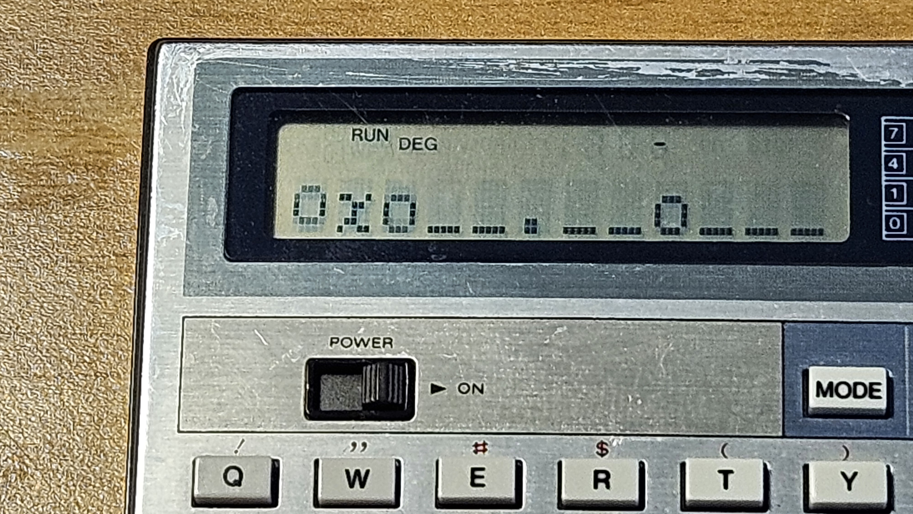
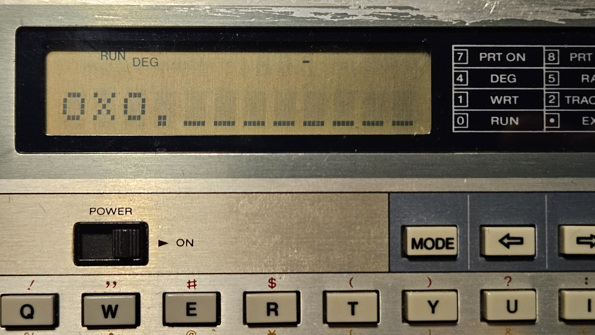
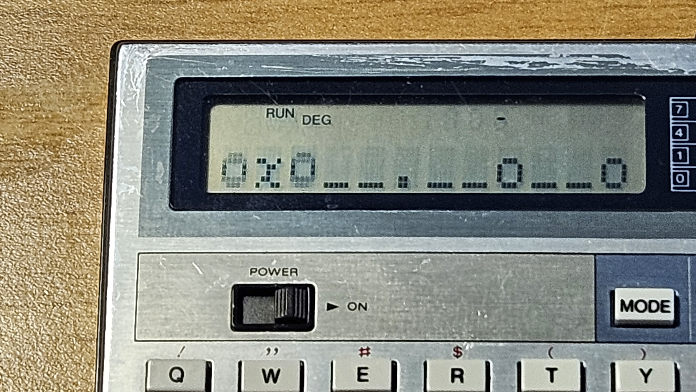

Programs list:
1) Moon Patrol "like" Game
2) Asteroids 1D "like" Game
2) Wolfram's 1D Cellular Automata (needs 1 kB RAM expansion OR-1)
MOON PATROL-like game on unexpanded Computer CASIO PB-100



Documents hosted here:
moonpatrol.txt [this page]Video Example of gameplay [mp4]
************************************************************
MOON PATROL-like game for unexpanded Computer CASIO PB-100
by P-LAB 2026
************************************************************
GAMEPLAY:
As in the original game by Williams Electronics, our lunar jeep bounces across the surface of the moon.
The aim of the game is to complete all 10 levels of increasing difficulty with only three lives available.
To do this, you need to jump over the smaller rocks (J key), but only when they are close.
The larger boulders cannot be jumped over but must be destroyed by pressing the F (Fire) key.
It is possible to destroy large boulders even when they are distant and there are small boulders in between.
NOTES TO THE PROGRAM LISTING
Please type in the correct graphic characters between double brackets in the following lines:
lines 14, 24 --> the "o" is the lowercase, in extended mode, press MODE . o keys. This char is the "boulder" obstacle.
line 16 --> the "O-o" is the first frame of the vechicle animation. Press: MODE . SHIFT A then X then O
line 17 --> the "o-O" is the second frame of the vechicle animation. Press: MODE . O then X then SHIFT A
line 18 --> the "o-o" is the frame of the vehicle jump. Press MODE . then SHIFT A, then SHIFT F, then SHIFT A
Please type in the correct operators for the "not equal to" and "greater or equal to" in the following lines:
line 7, 9, 13 --> the two characters "<>" listed below must be substituted with the single character "not equal to" by pressing SHIFT =
line 10 --> the two characters ">=" listed below must be substituted with the single character "greater or equal to" by pressing SHIFT +
line 14 --> to complete the line delete some extra space between keywords
P0 LISTING (At the end typing there should be 8 "steps" (bytes) of RAM left)
PREPARATION AND VARIABLES SETTING
Before running the game, issue the three commands below, either in RUN or WRT mode.
DEFM 1
G$="STAGE="
H$="LIVES="
2 FOR I=1 TO 8: R$(I)="_":NEXT I:L=1:B=0:E=0:D=0:F=3
3 PRINT G$;L;" GO!"
5 GOSUB 16
6 FOR I=0 TO 8: R$(I)=R(I+1):PRINT CSR(I+3);R$(I);:NEXT I
7 D=D+1:C$=KEY:IF C$="J";IF R$(0)<>"o";GOTO 18
8 IF C$="F";GOSUB 23
9 IF R$(0)<>"_" THEN 19
10 IF D>=100;GOSUB 27
11 GOSUB 17
12 R$(9)="_":B=B+1
13 IF B<>3 THEN 5
14 B=0:A=INT(RAN#*(99-L*7)):IF A<40;R$(9)=".":IF A<10;R$(9)="o"
15 GOTO 5
16 PRINT CSR0;"O-o";:RETURN
17 PRINT CSR0;"o-O";:RETURN
18 PRINT CSR0;"o-o";:R$(0)="_":GOTO 6
19 PRINT "CRASH!":F=F-1
20 GOSUB 31
21 IF F=0;PRINT "GAME OVER":END
22 GOTO 2
23 FOR J=0 TO 8
24 IF R$(J)="o";PRINT CSRJ+3;"*";:R$(J)="_":RETURN
26 NEXT J:RETURN
27 PRINT G$;L;" OK!":L=L+1
28 D=0:
29 IF L=11;PRINT "FINISH!":L=L-1:GOSUB 31:END
30 GOTO 2
31 E=E+D:PRINT H$;F;" ";G$;L;" P=";E:RETURN
VARIABLES LIST:
C$ = Key pressed by the player
D = Partial Score
E = Total Score
F = Lives counter
G$ = Fixed String with the value "STAGE=" to save program RAM
H$ = Fixed String with the value "LIVES=" to save program RAM
I = Index for terrain shifting cycle
J = Index for boulder interception cycle
L = Game level
R$() = Terrain Array
ASTEROIDS "like" 1D game on unexpanded Computer CASIO PB-100
************************************************************************ ASTEROIDS-like 1D game for unexpanded Computer CASIO PB-100 *
* by P-LAB 2026 *
***********************************************************************
GAMEPLAY
This game is freely inspired by the game "Asteroids" developed by Atari in 1979.
You command a triangle-shaped spaceship navigating through a treacherous region of space
filled with asteroids. Your onboard sensors help detect them at a distance, but you must
act quickly to evade their trajectory before they destroy your vessel.
Your spaceship is large and heavy and the rudder responds to the "M" key (Right) and "Z"
key (Left). Press and hold the key for your desired direction until the spaceship reaches
the position you want.
But watch out! The sensors have a nearly blind spot directly ahead of you: if an asteroid
approaches from that direction, you might spot it too late!
The game has increasing difficulty and the score is displayed on the right side of the
display.
NOTES TO THE PROGRAM LISTING
Please type in the correct graphic characters between double brackets in the following lines:
Line 12 --> the "<=" --> Less or equal: press SHIFT and -
Line 14 --> the "." --> press MODE . shift X key. This character is the asteroid spotted at great distance.
Line 15 --> the "o" --> press MODE . shift K key. This character is the asteroid spotted at mid distance.
Line 16 --> the "O" --> press MODE . shift Z key. This character is the asteroid spotted close up.
Line 17 --> the "A" --> press MODE . shift D key. This character is the spaceship.
P0 LISTING:
1 VAC
2 PRINT "ASTEROIDS 1D!":N=0
3 FOR I=0 TO 7
4 GOSUB 21
6 NEXT I
7 M$=KEY:IF M$="Z";L=L-1
8 IF M$="M";L=L+1
9 IF L<0;L=0
10 IF L>7;L=7
11 FOR I=1 TO 7:A(I)=A(I)-1
12 IF A(I)<=0;GOSUB 20
13 PRINT CSR I;" ";
14 IF A(I)=3;PRINT CSR I;".";
15 IF A(I)=2;PRINT CSR I;"o";
16 IF A(I)=1;PRINT CSR I;"O";
17 PRINT CSR L;"A";:NEXT I
18 N=N+1: PRINT CSR 9;N;:GOTO 7
20 IF I=L THEN 300
21 A(I)=INT(RAN#*30-N/10+5):RETURN
30 PRINT " CRAAASH"
31 PRINT "SCORE=";L:END
VARIABLES LIST
A(7) = Array representation of the space
I = index
L = spaceship position
M$ = spaceship helm (Z=left, M=right)
N = score
Wolfram's 1D Cellular Automata on expanded Computer CASIO PB-100
Conway's Game of Life and Wolfram's Cellular Automata: a few wordsConway's Game of Life
[ Wikipedia ]Life is a two-dimensional cellular automaton created by John Conway in 1970.
It runs on an infinite square grid, with each cell being in one of two states: live or dead.
It is one of the most fascinating examples of emergent complexity.
Simple Rules...
1) Any live cell with fewer than two live neighbours dies, as if by underpopulation,
2) Any live cell with two or three live neighbours lives on to the next generation,
3) Any live cell with more than three live neighbours dies, as if by overpopulation,
4) Any dead cell with exactly three live neighbours becomes a live cell, as if by reproduction.
... give complex results:
- Generates stable, oscillating, and mobile patterns (gliders, spaceships, etc),
- Demonstrates that minimal rules produce complex behaviors,
- it is Turing-complete (can simulate any computation).
Wolfram's Cellular Automata [
Wikipedia ]
Wolfram's cellular automata are systems where cells in a one-dimensional grid evolve according to deterministic rules based on the state of one cell and its neighbors.The 256 Rules:
Wolfram identified 256 distinct rules (numbered 0 to 255) for one-dimensional cellular automata. Famous examples:
Rule 30: Complex chaotic patterns.
Rule 110: Touring complete.
Rule 90: Sierpinski triangle.
The program
The program needs the RAM expansion OR-1 because its length exceeds the standard 544 bytes.Due to the one-line display, the program calculates Wolfram's one-dimensional cellular automata.
Main features:
- Type in the Wolfram's Rule number that you want to use.
- The "World" length can be a maximum of 30 cells.
- The initial state can be either random or manually entered (in binary notation).
- All cells are always shown: if the "World" is bigger than 12 cells, cells will scroll left.
- Iteration occurs automatically, if needed it can be paused with the STOP key and resumed with ENTER key.
Usage:
- Run the program
- The program asks for the Rule to apply: "RULE#?" Enter a number between 0 and 255.
- The program asks for the World Length: "LEN?" Enter a number less then 30.
- The program now asks to enter the initial state of your world "SET/'R'?" Type in R if you want a random state, or enter invidual cell states for every cell in your world.
Warning: questionable programming practices ahead
Although Wolfram's cellular automata computation works well with numerical arrays, I used text arrays.This choice was made because, in the BASIC of the PB-100, the printing of values of a numerical array always reserve a space for the sign.
On a 12 character long display this would have meant only 6 cells on the screen at the same time, and an annoying long scroll.
Swapping between numbers and characters representing numbers -for printing purposes- it's a common programming technique on this machine.
PB-100's BASIC is also very limited. For example: the VAL function argument can't be an element of an array, and the MID function works only on the special "$" variable,
The maximum length for any other string variable is just 7 characters, and many other quirks.
Last but not least, please note that there isn't any sanity check on the input.
So, if you skip some bit in the definition of the initial state, sooner or later an error message will pop up.
NOTES TO THE PROGRAM LISTING
Please type in the correct characters between double brackets in the following lines:
Line 2010 --> the "^" --> Power function: press SHIFT and .
Line 2020 --> the ">=" --> Greater or equal: press SHIFT and +
P0 LISTING
Issue the following command before entering the program:
DEFM 19
1 VAC
10 INPUT "RULE# ",N:GOSUB 2000:INPUT "LEN",A(39): INPUT "SET/'R'",$
20 IF $="R";GOSUB 1000
30 PRINT CSR 0;$;:A(44)=A(44)+1
100 FOR A=1 TO A(39)
110 IF A=1;A$(41)=MID(A(39),1):GOTO 130
120 A$(41)=MID(A-1,1)
130 A$(42)=MID(A,1)
140 IF A=A(39);A$(43)=MID(1,1):GOTO 160
150 A$(43)=MID(A+1,1)
160 A(40)=38:IF A$(43)="1"; A(40)=A(40)-1
170 IF A(42)="1"; A(40)=A(40)-2
180 IF A(41)="1"; A(40)=A(40)-4
190 A$(A)=A$(A(40))
300 NEXT A
320 $="":FOR A=1 TO A(39):$=$+A$(A):NEXT A:GOTO 30
1000 $="":FOR A=1 TO A(39):A(40)=INT(RAN#*2)
1020 IF A(40)=0;$=$+"0":GOTO 1040
1030 $=$+"1"
1040 NEXT A: RETURN
2000 FOR I=7 TO 0 STEP -1:P=2^I
2020 IF N>=P;A$(38-I)="1":N=N-P:GOTO 2040
2030 A$(38-I)="0"
2040 NEXT I: RETURN
VARIABLES LIST:
$ = String containing the "world"
A = Generic index
A$(1..30) = World array after computation
A$(31..38) = Binary representation of the #rule (bit 38=LSB, bit 31=MSB)
A(39) = "World" length
A(40) = General variable
A$(41) = Cell on the left
A$(42) = Cell being tested
A$(43) = Cell on the right
A(44) = Iterations count
I,N,P = Variables used only once, for the conversion on the rule# into binary
This work is licensed under CC BY 4.0